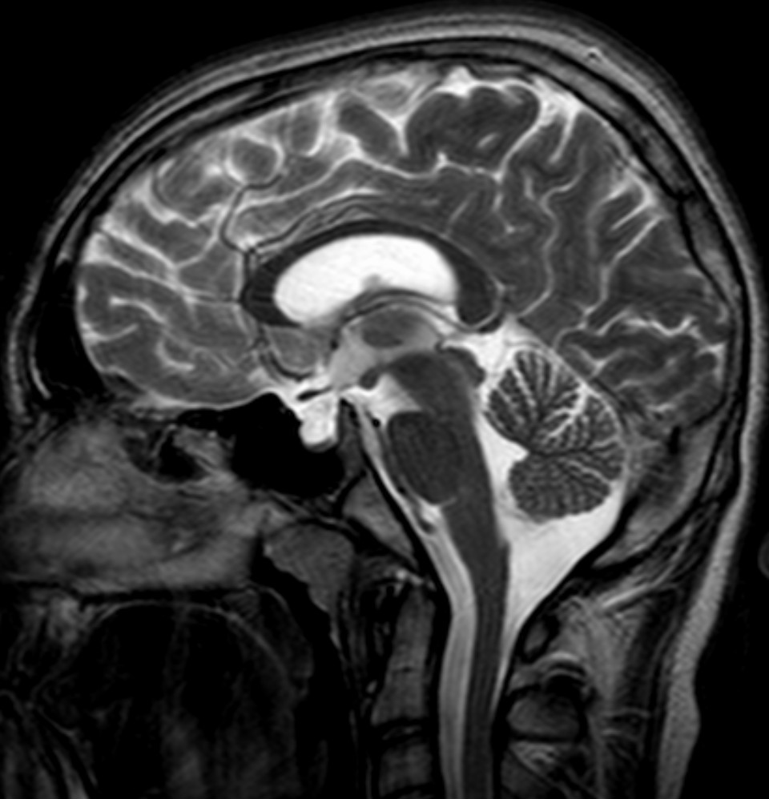

Ficha del catálogo
Silla turca vacía
- Sistema
- Nervioso
- Modalidad
- RM
- Región
- Silla turca
- Dificultad
- Básico
La silla turca vacía es la herniación del espacio subaracnoideo dentro de la silla a través de un diafragma selar incompleto, con aplanamiento de la hipófisis contra el suelo. Suele ser un hallazgo incidental sin repercusión, aunque puede asociarse a hipertensión intracraneal idiopática o aparecer tras cirugía, radioterapia o infarto hipofisario.
Técnica
Resonancia magnética con cortes finos sagitales y coronales potenciados en T1 y T2 centrados en la región selar. El contraste no suele ser necesario cuando la morfología es típica y la glándula residual se identifica con claridad.
Qué observar
- Contenido de señal idéntica a la del líquido cefalorraquídeo dentro de la silla
- Hipófisis aplanada como una lámina fina sobre el suelo selar
- Tallo hipofisario centrado que atraviesa el contenido líquido
- Ensanchamiento y remodelación de la silla en casos de larga evolución
- Signos asociados de hipertensión intracraneal como distensión de las vainas ópticas
- Ausencia de masa, de tabiques o de realce anómalo
Hallazgos
La silla aparece ocupada por líquido con señal idéntica a la del líquido cefalorraquídeo en todas las secuencias, con la glándula reducida a una banda fina y cóncava aplicada contra el suelo. El tallo hipofisario permanece rectilíneo, centrado y visible en su recorrido, dato que confirma que no se trata de una lesión quística. En las formas asociadas a hipertensión intracraneal pueden verse vainas de los nervios ópticos distendidas y aplanamiento de la parte posterior del globo ocular.
Perlas
La visualización del tallo atravesando el contenido líquido y llegando al suelo distingue la silla vacía de un quiste intraselar, porque un quiste desplaza el tallo en lugar de dejarlo centrado. Conviene además revisar de forma dirigida los signos de hipertensión intracraneal, ya que el hallazgo puede ser la primera pista de un cuadro tratable.
Diagnóstico diferencial
- Quiste de la bolsa de Rathke
- Contenido de señal distinta a la del líquido cefalorraquídeo, con pared propia y desplazamiento de la glándula y del tallo.
- Quiste aracnoideo intraselar
- Lesión con efecto expansivo y contorno propio que desplaza el tallo, sin la glándula aplanada de forma laminar.
- Craneofaringioma quístico
- Presenta componente sólido que realza y calcificaciones, y no reproduce la señal del líquido cefalorraquídeo.
- Necrosis hipofisaria posparto
- Existe antecedente obstétrico con hipopituitarismo, y la glándula muestra cambios evolutivos antes de la retracción.
Simuladores
- Volumen parcial en cortes gruesos que simula ausencia de glándula
- Artefacto de flujo del líquido cefalorraquídeo en la cisterna supraselar
- Silla profunda constitucional con glándula de altura normal
Por modalidad
- TC
- Muestra la silla ampliada con contenido de baja densidad, pero define mal la glándula residual y el tallo.
- RM
- Es la técnica de elección porque identifica la lámina glandular, el trayecto del tallo y los signos de hipertensión intracraneal.
Protocolo
Cortes sagitales y coronales finos T1 y T2 de la región selar, con valoración adicional de las vainas de los nervios ópticos y de los senos venosos cuando se sospecha hipertensión intracraneal idiopática.
Clasificación
Se distingue la forma primaria, por incompetencia congénita del diafragma selar, de la forma secundaria, que aparece tras cirugía, radioterapia, infarto hipofisario o regresión de un tumor. La distinción se apoya sobre todo en la historia clínica.
Errores frecuentes
- Informarla como lesión quística sin comprobar la posición del tallo
- No buscar signos asociados de hipertensión intracraneal
- Atribuirle por sistema un déficit hormonal sin correlación clínica ni analítica

silla turca vacía hipófisis diafragma selar hipertensión intracraneal idiopática hallazgo incidental resonancia selar